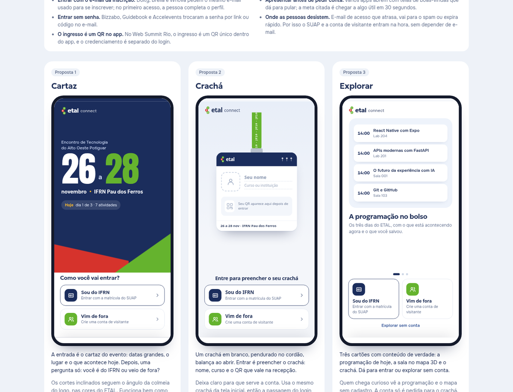
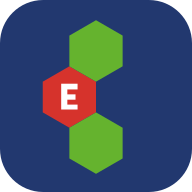

Escolher
Programação, detalhes e atividades salvas.
ETAL Connect / uma experiência de evento
Da programação à porta da sala.
Um app para viver o encontro.


O problema aparece quando a gente chega
Demonstração interativa
Os cards abrem. A agenda navega. O crachá vira. A experiência está dentro do slide.
Código atual de prototipo/ · sessão isolada e dados demonstrativos.
Programação, detalhes e atividades salvas.
Campus, salas, andares e caminhos.
Identificação primeiro. Credenciamento após QR válido.
O produto foi tomando forma ao experimentar as telas e comparar o mapa com o lugar real.

Construir.
Experimentar.
Olhar de novo.
Ajustar.
Fachada, pátio, auditório e entorno dão ao mapa uma identidade que a gente reconhece.


Uma referência que mudou o desenho
Na dissertação de Larissa Leiros de Souza, encontramos os três pavimentos do bloco principal. A planta passou a orientar a reconstrução do interior.
A mesma geometria sustenta a planta, os andares e a localização das atividades.

Arraste para comparar. Visualização das duas fontes; usos atuais foram ajustados com as informações do usuário.
O mapa preserva a base geográfica do levantamento e usa uma transformação local para desenhar o campus.
O entorno também ajuda a reconhecer o caminho: apartamentos, rodovia, entrada, árvores e pontos de referência.
Gire, abra os pavimentos e veja uma rota atravessar o modelo.
Motor real do aplicativo
Desenhar uma rota e medir a posição da pessoa são problemas diferentes.
Esquema da lógica / não é rastreamento de posiçãoO caminho usa corredores e acessos conhecidos. O Dijkstra busca uma passagem, considerando bordas, curvas, escada ou rampa.
Para um app de evento, o acesso imediato e o reaproveitamento da experiência web fazem sentido.

ETAL ConnectUm link para abrir.Acesso por link, instalação pelo navegador e cache do app. Reaproveita o mapa Canvas e a base web que já construímos.
Seria uma alternativa para um aplicativo nativo. Acrescentaria o trabalho de build, distribuição e adaptação das partes que hoje dependem do navegador.
Não fizemos um benchmark entre stacks. Esta é a leitura técnica da implementação atual.O PWA guarda a experiência visual no aparelho. A confirmação de presença continua dependendo do servidor.
Arquivos e recursos usados no aparelho.
Service worker + Cache Storage.
Uma cópia para abrir depois.
Sessão, agenda e confirmação de presença no servidor.
A simulação altera apenas a ilustração. No app atual, /api/ e /q/ ficam fora do cache. Não existe fila de presença offline; sem rede, pode aparecer a programação de exemplo embutida.
A participação no evento é confirmada depois, por um QR válido.
Identificação, credenciamento e presença em atividade têm papéis diferentes.

O navegador cuida da experiência. A API aplica as regras. O banco guarda o resultado.
HTML, CSS e JavaScript.
O cliente envia a ação.
Sessão, permissão e regras.
A operação é validada.
Relaciona a pessoa à atividade salva, sem repetir o par.
Pessoas e atividades se conectam pela agenda e pelas presenças. O restante apoia entrada, avisos e localização.
A documentação interativa da API também faz parte da demonstração.
As rotas geram o OpenAPI. No Swagger, executamos a verificação de saúde e recebemos uma resposta do servidor.
A organização acompanha a programação, publica avisos e ajusta os locais por outro espaço de trabalho.
A identidade está nos detalhes — e a qualidade precisa caber no aparelho de quem vai usar.
 Motor real do aplicativo
Motor real do aplicativo
A apresentação mostra o que foi verificado e os limites que ainda precisam de uso real.
Execução local na revisão de 09/11/2026. Um aviso de depreciação no cliente de testes.
Agenda, QR, duplicidade, permissões, avisos e exportações.
App atual, Swagger local e referências usadas para o mapa.
SUAP, e-mail, câmera, acessibilidade e operação real do evento.
Programação, materiais e partes do painel continuam exemplos.
ETAL Connect
A base está construída. O próximo passo é ensaiar os fluxos com quem vai operar.
Programação, salas, vagas e regras de presença.
SUAP, e-mail, painel e operação do banco.
Celulares reais, acessibilidade e rede instável.